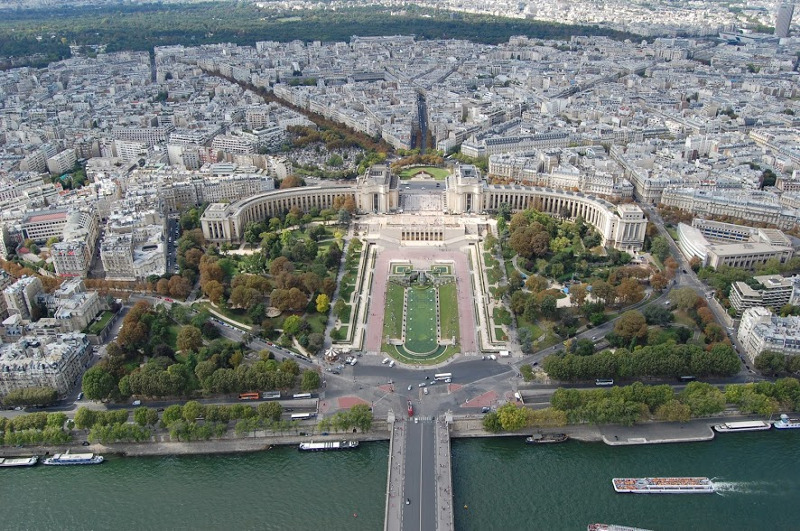
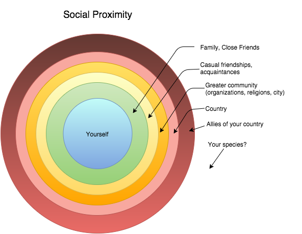

Why You Hear More About Paris Than Syria
Nov 17, 2015
I scroll past the barrage of profile pictures with French flag filters. Others label it as latest way to pretend you're helping a cause. Still others argue for the importance of showing solidarity against ISIS. Ultimately though, someone asks: why so much attention on France? Why do we largely ignore the recent travesties in Syria, Afghanistan, Kenya, Yemen, Lebanon, or so many other places? Why does Facebook create a filter for the attacks on France, but not anyone else?
Thousands of people are asking these questions, and like most social issues, we can't expect a singular explanation. Rather than jump to conclusions, I'd like to dive in a little bit. As the first step, let's start with what's most visible: the media.
The media acts as a conduit between the information of the world and the people who want access to it. In a competitive market like ours, news channels who want to stay in business need to keep their customers coming back. This is basic supply and demand, and it means these news providers must show the stories that give them the highest ratings and viewership.
This explains why major news channels report so heavily on murders, war, and natural disasters, interspersed with celebrity gossip and sensationalized pieces about the latest thing known to cause cancer. It's what catches our attention, and keeps us coming back for more. This creates a filter effect however: our perception of the world is distorted by the stories we hear about the most. For example, many people think that violent crime is getting out of control, when in fact murder rates are lower than ever.
This leads to many more questions, but one in particular stands out to me:
What makes us care about some tragedies more than others?
With the number of tragic stories the media throws at us, it's impossible to maintain enough energy to pay attention to most of them, let alone do something about all of them. To make matters worse, constantly hearing about new shootings can make us so desensitized to stories of death around the world that we hardly bat an eye when we hear about them. So how do we decide which ones to pay attention to?
Products of evolution
To begin, our brains are wired to understand proximity. The easier it is for us to see, feel, or imagine something, the more we care about it. In the physical sense, this is why an attack on our own country hits us harder emotionally than one abroad. In the cultural sense, it's why an attack on a Western country like France feels more real to us than the attack that happened just hours earlier in Lebanon. In the temporal sense, it's why hearing about a recent earthquake leaves a greater impression than hearing about one that happened twenty years ago. It's why the average American didn't seem to pay much attention to Syrian refugees until we saw a horrifying picture of a drowned Syrian toddler washed up on a beach. Suddenly we could imagine innocent children dying, and it all became real.
This concept isn't entirely new. In 1986, William C. Adams, a professor at George Washington University, analyzed news coverage of natural disasters. He found that aside from the death toll, the two factors that mattered most in predicting U.S. coverage of an international disaster were (1) the geographic proximity to the U.S., and (2) the number of American tourists who visited the country where the disaster took place.
With this in mind, compare Paris and Beirut. How many people do you know that have been to each? If you're not sure, Paris is the second most popular tourist destination for Americans, after London. How many of us even knew Beirut is the capital of Lebanon? I'll admit I didn't until a few days ago.
This prioritization by the brain is one of many ways that our biological evolution has not kept pace with our developing society. For most of human history, we lived in small nomadic tribes of 25–40 people. Aside from occasional contact with other tribes, there was no reason to concern yourself with anyone you didn't see on a daily basis. To care and sacrifice for all people equally would have proven difficult and tiresome, and provided no benefits to survival or reproduction. In turn, those who focused their energies on their immediate social circles were better suited to survive and pass on their genes.
As a result, our families matter more to us than our neighbors, our friends and acquaintances matter more than strangers, and people with similar backgrounds matter more than people we know nothing about.
Aside from this Proximity Effect, there are other influences at work here too. When we hear about people dying all over the Middle East for months on end, we start to experience what is sometimes referred to as Compassion Fatigue. It becomes difficult to sustain compassion for others over a long period of time. This isn't to say people are just uncaring or racist. It just means that after enough repetition, we lose focus because “death just happens there,” and it takes an event with unique factors to capture our attention (such as being particularly gruesome, targeting children, or happening to a city in peacetime).
To better understand this, imagine you're in a room with a loud, steady clicking noise every few seconds. At first you can't help notice every click, but over time your brain adjusts to a new normal and it fades into the background. You hardly notice it anymore until something changes. Maybe it gets louder, or it shifts dramatically in tone or rhythm. The novelty of the new sound registers with your brain and it becomes interesting again.
So while ISIS has been killing thousands upon thousands of people this past year, it takes a graphic image like a drowned toddler to catch our attention – or a peaceful, thriving city like Paris suddenly turning into a warzone. It captures our attention because we don't see it as a normal world event. Couple this with the frequency of travel and interaction between France and the U.S., and it becomes much easier for a typical American to identify with a citizen of Paris than of Beirut or Nairobi, so it holds our attention more than anything else.
So no, we're not being racist here, but you should still make the effort to learn about others who are suffering at the hands of ISIS. Or check out this great video simplifying and explaining the conflict in Syria, and consider yourself that much more informed about the world.